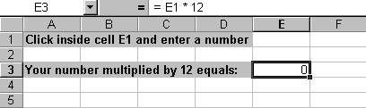
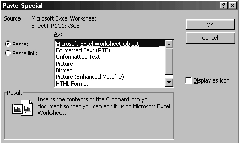
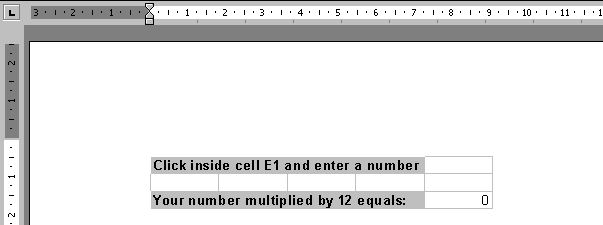

Free
computer Tutorials
|
Free
computer Tutorials
|
|
 HOME
HOME
|
Stay at Home and Learn | |||||
How to Insert an Excel Spreadsheet into a Microsoft Word Document
Spreadsheets are inserted into Word documents using something called Object Linking and Embedding. Object Linking and Embedding (or OLE), can be a complicated subject, but basically it's used when you want to insert something from one programme into another programme. The example you're going to see will embed a spreadsheet chart into Microsoft Word. You have two choices when you want to embed something from Excel into another programme - to use linking, or embedding. If you use linking, you can update the data in Excel and see the changes in the other programme; if you use embedding, any changes you make to Excel will not show up in the other programme. First, here's how to create a Linked Object. The two programmes used will be Excel and Word. So if you have Microsoft Word and Excel, open up both programmes. In Excel, create the following spreadsheet:  All the spreadsheet does is multiply whatever is in cell E1 by 12. The answer goes in cell E3. (This example is not terribly functional: you wouldn't really want to use OLE with this particular spreadsheet. But it's easy to create, and will serve as an example of how to use Linking.)

Word now goes to work and embeds your spreadsheet into the Word processed
document. Because we chose Paste Link, we will be able to view
any updates made from Excel. The Word document should look like the
one below:  To see that it really does update in Word, do this:
As you can see, the numbers from the Excel spreadsheet are now in the Word document. The link worked! If you don't want Word updating the embedded object, you would select Paste instead of Paste Link from the Paste Special dialogue box. Everything else is the same. Things like Charts and Pivot Tables are the ones usually embedded into a Word document, all ready for the company presentation.
In the next part, we'll see how to reference formulas and data on other worksheets Learn how to reference formulas
and data on other worksheets --> |
||||||
|